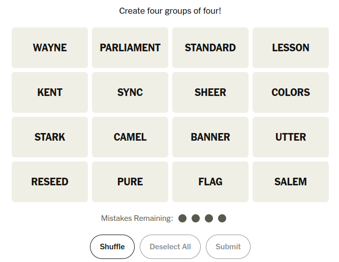

Lines and Labels
Fred Agbo
September 25, 2026
Happy FRIDAY!
- Class grouping today: Scan the QR code or go to https://tools.jedrembold.prof/daily
- Class code is
bR9RLT - Introduce yourselves! What is your favorite shape?

Quick Announcements
- Project 1 Wordle is due on Monday
next week at 10pm
- Hopefully, people are making significant progress with the milestones
- Heads up: Our first Midterm exam is a week from
now!
- Study materials will come out on or before Monday next week
- Sections next week will be for reviewing and studying
- More info about the midterm on Monday
- Need accommodations? Book a spot with Testing center by emailing them, and be sure to copy me
Wednesdays left off
- Supposed live coding
Estimating Pi
- One of the ways that the value of \(\pi\) can be estimated is by looking at the number of random points that strike a circle vs a surrounding box
- Our task here is to both estimate they value of \(\pi\) using random numbers in this fashion, but to also visualize it!
A Solution
from pgl import GWindow, GRect, GOval
import random
WIDTH = 800
HEIGHT = 800
SIZE = 700
DART_SIZE = 10
gw = GWindow(WIDTH, HEIGHT)
background = GRect(
WIDTH / 2 - SIZE / 2,
HEIGHT / 2 - SIZE / 2,
SIZE,
SIZE
)
background.set_filled(True)
background.set_color('gray')
gw.add(background)
target = GOval(
WIDTH / 2 - SIZE / 2,
HEIGHT / 2 - SIZE / 2,
SIZE,
SIZE
)
target.set_filled(True)
target.set_color('darkgray')
gw.add(target)
attempts = 1000
successful_strikes = 0
for i in range(attempts):
x = random.uniform(WIDTH / 2 - SIZE / 2, WIDTH / 2 + SIZE / 2)
y = random.uniform(HEIGHT / 2 - SIZE / 2, HEIGHT / 2 + SIZE / 2)
dart = GOval(
x - DART_SIZE / 2,
y - DART_SIZE / 2,
DART_SIZE,
DART_SIZE
)
dart.set_filled(True)
distance_to_center = (
(x - WIDTH / 2)**2 + (y - HEIGHT / 2)**2
) ** (1/2)
if distance_to_center < SIZE / 2:
dart.set_fill_color('red')
successful_strikes += 1
else:
dart.set_fill_color('blue')
gw.add(dart)
print(successful_strikes / attempts * 4 )Group Problems
Problem 1: The Big Dipper
- You are provided with a file already with a night scene of the Big Dipper
- Your task is to draw in the lines connecting the proper stars
- No copy/pasting numbers here! Use methods to grab the needed coordinates from the star ovals
Problem 2: Label Bounder
- Write a program that:
- Chooses a random English word and sets it to a GLabel
- You can place the word starting on the left of the screen, roughly halfway down
- Sets the font of that GLabel to a random size between 20 and 100pt, serif
- Draws a rectangle immediately around the GLabel, such that its top is at the ascent distance and bottom at the descent distance.
- Chooses a random English word and sets it to a GLabel
Example Solution
from pgl import GWindow, GLabel, GRect
import random
from english import ENGLISH_WORDS
WIDTH = 500
HEIGHT = 200
gw = GWindow(WIDTH, HEIGHT)
word = random.choice(ENGLISH_WORDS).capitalize()
size = random.randint(20, 100)
label = GLabel(word, 0, HEIGHT / 2)
label.set_font(f"{size}pt serif")
gw.add(label)
box = GRect(
label.get_x(),
label.get_y() - label.get_ascent(),
label.get_width(),
label.get_ascent() + label.get_descent()
)
box.set_color('red')
gw.add(box)
Problem 3: What’s the Temp?
- I’ve already created the basic thermometer to the right with a randomly set temperature
- Your job is to add the line markers and temperature labels, getting as close as possible to the image
- There are some constants defined in the starter file to help!

Example Solution
# Just continuing from the starting template...
temp = 10
for i in range(MARKER_START_Y, BASE - THERM_HEIGHT, -MARKER_STEP):
line = GLine(
WIDTH / 2 + THERM_WIDTH / 2,
i,
WIDTH / 2 - THERM_WIDTH / 4,
i
)
line.set_line_width(2)
gw.add(line)
lab = GLabel(f"{temp}", WIDTH / 2 + THERM_WIDTH, i)
gw.add(
lab,
WIDTH / 2 + THERM_WIDTH,
i + lab.get_ascent() / 2
)
temp += 10Live Coding
Recreating Connections
- Suppose we want to recreate the starting layout of the NYT’s Connections game
- The puzzle for today looks like the image to the right

Code
- Sample solution to come!!!